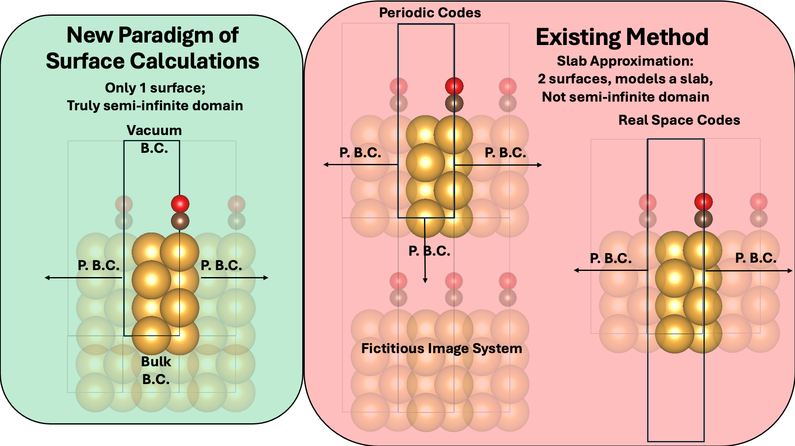

VIP Sub-Teams (Fall 2026)#
The course is organized into four sub-teams. All new undergraduate students start on the Training sub-team (roughly the first 10 weeks) and then transition into one of the research sub-teams. Returning students and online MS students join a research sub-team directly (or may elect to complete the training exercises first — discuss with your mentor).
Most sub-teams use the SPARC DFT code developed at Georgia Tech; the Single-Atom Orbital-Free sub-team is the exception, and works instead with a stand-alone radial solver and pre-computed Kohn-Sham reference data.
Training#
Leads: Todd Whittaker and Nick Matteucci
All new undergraduate students complete a training program covering the basics of high-performance computing, common quantum-mechanical techniques such as density functional theory (DFT), and an introduction to machine-learning tools. The required lectures and exercises are enumerated on the VIP info page, and the weekly pacing is in the syllabus Training Schedule. Goals and deliverables for the training sub-team are provided by the instructors and are known to be achievable based on prior experience.
Surface Calculations#
Leads: Sayan Bhowmik and Neung-Kyung Yu
{kind=link}

Nearly every DFT study of a catalyst surface uses the slab approximation: a few atomic layers of material, padded with vacuum, repeated periodically. It is a convenient model, but it is not the physical system. A real surface is the boundary of a semi-infinite solid, whereas a slab has two surfaces that can interact through the material, and in a periodic code it is also surrounded by a fictitious stack of image slabs separated by vacuum. Making those artifacts small enough to ignore is what forces the usual convergence work of thickening slabs and padding vacuum. This sub-team works on an alternative: applying a bulk boundary condition beneath the surface, so the calculation contains only one surface and the solid extends semi-infinitely below it — the approach described in arXiv:2607.07894 and implemented in SPARC.
The semester is organized as a head-to-head comparison of the two methods on the same chemistry. Early on you will settle on two adsorption energies (at most three) to carry through the whole semester, chosen together with the sub-team leads — start simple, since the point is the method comparison rather than the difficulty of the system. Through the Week 8 class (10/14), each meeting has two parts: a progress check on your slab-approximation calculations in SPARC, and a group discussion working through the bulk boundary-condition paper and the details of the method. The target for the midterm (deliverables due 10/16) is to have at least two adsorption energies completed in the slab approximation; that is the benchmark for an A-level midterm grade, which is advisory only. In the second half of the semester you repeat those same calculations with the bulk boundary condition, and your final report presents the comparison — both the numbers and what you learned about the two methods. Successfully reproducing one calculation under the bulk boundary condition is the A-level benchmark for the final; that bar may be relaxed if the method turns out to be harder to apply than expected. Reproducing published adsorption energies from the literature is a natural entry task here, and this sub-team absorbs the former stand-alone DFT reproducibility project.
One practical warning about what this work will feel like. The bulk boundary condition is a new feature and is not yet supported through the Python interface, so for that half of the project you will be stepping outside of ASE and the Python environments used in training, and driving SPARC directly. Expect to build a real understanding of the geometry of your calculation rather than letting a Python API assemble it for you, and expect to do some unglamorous work: editing input files by hand, keeping the slab and bulk-BC setups consistent with each other, and writing your own bash submit scripts on PACE. That is a genuine part of the project, and it is worth flagging up front — this sub-team suits students who are willing to get their hands dirty at the level of input files and job scripts.
Single-Atom Orbital-Free#
Lead: Seongeun Yun
Kohn-Sham DFT scales cubically with system size, which is what ultimately limits how large a system you can treat. Orbital-free DFT (OFDFT) scales linearly instead, because it drops the orbitals entirely and writes the energy as a functional of the electron density alone. The catch is the kinetic energy. In Kohn-Sham DFT the non-interacting kinetic energy \(T_s[n]\) is computed from the orbitals; in OFDFT it has to be an explicit functional of the density, and no such functional is known that works well in general. This is the central open problem in OFDFT. The standard move is to split off the part we do know exactly — the von Weizsäcker term \(T_{vW}[n]\), which is exact for one-orbital systems — and lump the rest into a Pauli term:
\(T_\theta[n]\), and its functional derivative the Pauli potential \(v_\theta\), is the unknown piece. This sub-team’s goal is to model it as a function of density-dependent features — given \(n(\mathbf{r})\) and quantities derived from it (gradients, Laplacians), predict \(v_\theta\) or \(T_\theta\).
The reason for working on single atoms is that they make the problem tractable without making it fake. An isolated atom can be solved essentially exactly with Kohn-Sham DFT, which means reliable reference data is available to fit and test against, and in a spherically symmetric system the whole problem reduces to one radial dimension. The missing kinetic energy term can therefore be studied in isolation, rather than tangled up with everything else that is hard about a real material. You will work from pre-computed Kohn-Sham reference data — per-point densities and derived features, with the corresponding potentials and kinetic energies — organized by atomic number, and the practical work is building features from that data, fitting models, and checking them. Unlike the other sub-teams, there is no fixed set of milestones here: the specific target you take on is negotiated with the sub-team lead early in the semester and recorded in your Personal Goals document, since the useful next step depends a great deal on where the sub-team’s work stands when you join.
What makes this project distinctive is that you are not just minimizing a fit error. A model of \(v_\theta\) has to respect properties that are known exactly — the kinetic energy scales quadratically under density scaling; \(T_\theta\) is non-negative and vanishes identically for one- and two-electron atoms; the Pauli potential is positive everywhere; and it decays to zero far from the nucleus with a known centrifugal-like tail. Those are your real validation targets, and a model that fits well but violates them is not a good model. Expect this to be the most theory-forward of the sub-teams: you should be ready to work through the derivations and read the references below rather than treating the data as a black-box regression problem. Expect it to be the most Python- and ML-heavy as well — feature engineering and model fitting rather than HPC job scripts. And expect to need real numerical care. Both the potential and its derived features become unstable in the very high- and very low-density limits, and Laplacian-based features are noisy, so a large part of the work is knowing when a number is physics and when it is an artifact.
Key references
Mi, W., Luo, K., Trickey, S. B., & Pavanello, M. (2023). Orbital-free density functional theory: An attractive electronic structure method for large-scale first-principles simulations. Chemical Reviews, 123(21), 12039–12104. (Start here — a recent, broad review.)
Lignères, V. L., & Carter, E. A. (2005). An introduction to orbital-free density functional theory. In Handbook of Materials Modeling: Methods (pp. 137–148). Springer Netherlands.
Levy, M., & Ou-Yang, H. (1988). Exact properties of the Pauli potential for the square root of the electron density and the kinetic energy functional. Physical Review A, 38(2), 625.
Lehtomäki, J., Makkonen, I., Caro, M. A., Harju, A., & Lopez-Acevedo, O. (2014). Orbital-free density functional theory implementation with the projector augmented-wave method. J. Chem. Phys., 141, 234102.
The reference dataset is distributed through Canvas — ask the sub-team lead if you do not have access.
Machine-Learned Exchange-Correlation#
Leads: A. J. Medford and Charlotte Shih
Kohn-Sham DFT is exact in principle, and in practice everything hinges on a single term. Of the pieces that make up the total energy — the kinetic energy, the external potential, and the classical Coulomb repulsion — only the exchange-correlation (XC) energy \(E_{XC}[n]\) has no known exact form. Every functional you will use in this course (LDA, GGA, hybrids) is a different approximation to it, and the accuracy of essentially every DFT number you produce traces back to that one choice. This sub-team asks whether a machine-learned functional can do better: train a model to predict XC quantities from the electron density and features derived from it, instead of writing down a fixed analytic form by hand. It is a natural counterpart to the Single-Atom Orbital-Free sub-team — that team models the kinetic term, this one models the exchange-correlation term, and the two are the places where Kohn-Sham DFT and orbital-free DFT respectively have to approximate something.
The project spans two settings, and the recommended path runs through both. Single-atom systems come first: they are cheap, they reduce to one radial dimension, and near-exact reference data is available, so a new idea can be tested there quickly and diagnosed when it fails. A method that works on single-atom XC is then translated to full 3D systems, which is where it has to survive contact with reality. That translation is the interesting part of the project rather than a formality — a model can look excellent on radial atomic data and still break down in three dimensions. As with the orbital-free sub-team, there is no fixed set of milestones: this is continuing work from prior semesters, and what constitutes a useful contribution depends on where the effort stands when you join, so you will define your own targets with the leads early in the semester and record them in your Personal Goals document.
The two references below are the group’s own prior work on this problem and are the best place to start. The first introduces the core idea: build a feature space from convolutions of the electron density, using rotationally invariant kernels, and learn the functional on top of it. The second carries that approach into exactly the translation described above — a self-consistent convolutional functional, applied not just to small molecules but to bulk metals and adsorption at metal surfaces.
Practically, expect this to be a Python- and ML-heavy project: constructing features from densities, fitting models, and — critically — evaluating them honestly. The hardest habit to build is skepticism about your own results. A functional is not judged by its regression error against reference data; it is judged by whether it produces good physics when it is actually used, and a model with an excellent fit can still fail in that setting. Building the case that a model works is a substantial part of the work here, and students who enjoy the theory side will find plenty of it, since the useful constraints on \(E_{XC}\) come from knowing what the exact functional must satisfy.
Key references
Lei, X., & Medford, A. J. (2019). Design and analysis of machine learning exchange-correlation functionals via rotationally invariant convolutional descriptors. Physical Review Materials, 3(6), 063801. doi:10.1103/PhysRevMaterials.3.063801 · arXiv:1901.10822
Sahoo, S. J., Xu, Q., Lei, X., Staros, D., Iyer, G. R., Rubenstein, B., Suryanarayana, P., & Medford, A. J. (2024). Self-consistent convolutional density functional approximations: Application to adsorption at metal surfaces. ChemPhysChem, 25(10), e202300688. doi:10.1002/cphc.202300688 · arXiv:2308.05310